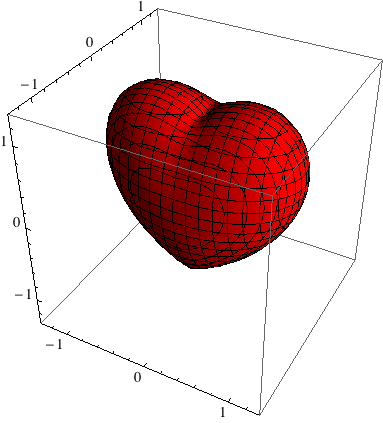
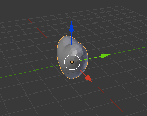
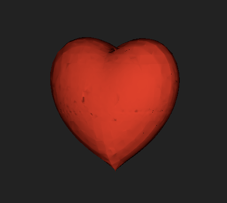

January 5, 2013 #other
Valentine's Day is approaching. Let's have some fun.
First, we all know that mathematica can draw a beautiful
3d heart with only one single command:
ContourPlot3D[
320 (-x^2 z^3 - 9 y^2 z^3/80 + (x^2 + 9 y^2/4 + z^2 - 1)^3) == 0,
{x, -1.3, 1.3}, {y, -1.3, 1.3}, {z, -1.3, 1.3},
ContourStyle -> Directive[Red]]

Let's save it as a model file with this command:
Export["heart.ply", %]
We need blender to convert it into another format.
Download it here and
install three.js extension here.
Open blender you will see a default cube.
On the left menu column you will see a Delete.
Yes! Go you!
Then File -> Import -> Stanford (.ply),
and select our heart.ply. You will see it like this.

Next, File -> User Preferences -> Addons,
find a addon named three.js format and enable it.
Then File -> Export -> Three.js (.js) and we will get a heart.js.
It can be imported by three.js and shown in browser.
The final step contains a little more codes (github) and here is the final example.

This model is handy and you can do more romantic things with powerful three.js.
But you have to make sure that she has a "real" browser supporting webGL.